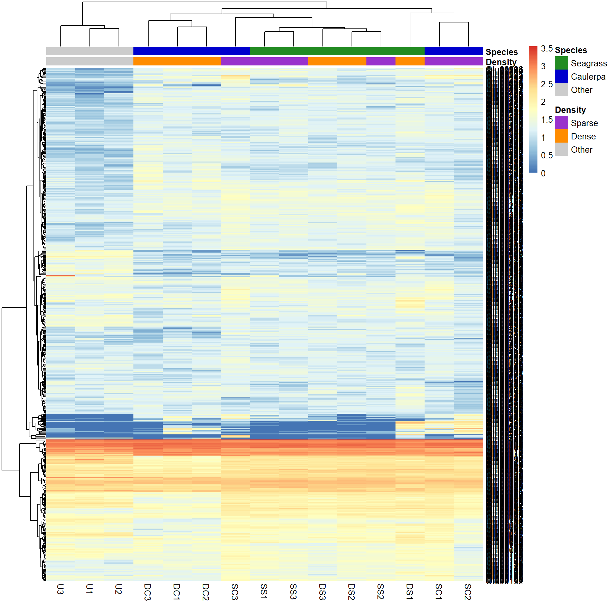
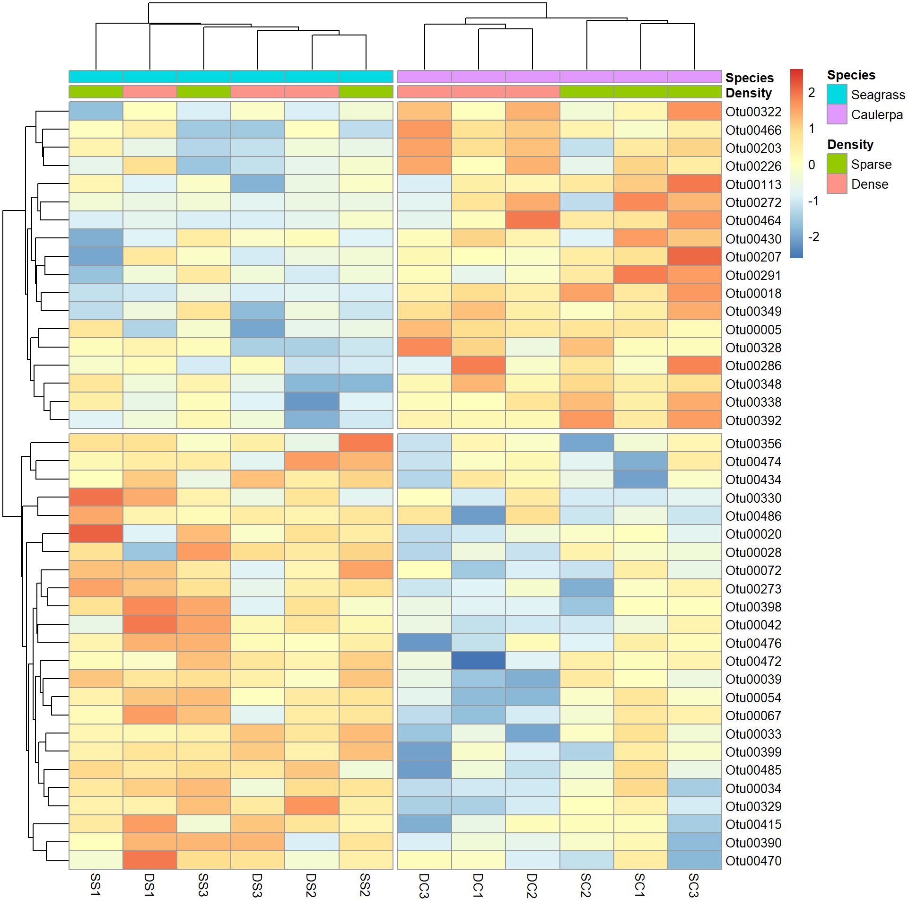

library(pheatmap)
library(dplyr)Warning: package 'dplyr' was built under R version 4.3.2Los mapas de calor son un método útil para explorar conjuntos de datos multivariados. Las variables de respuesta (por ejemplo, abundancias) se visualizan utilizando gradientes de color o esquemas de color. Con la transformación adecuada y la agrupación de filas y columnas, se pueden observar patrones interesantes dentro de los datos. También se pueden utilizar para mostrar los resultados después del análisis estadístico, por ejemplo, para mostrar aquellas variables que difieren entre los grupos de tratamiento.
En este tutorial, utilizaremos mapas de calor para visualizar patrones en las comunidades bacterianas encontradas en hábitats marinos en presencia de dos macrófitas (pasto marino y Caulerpa) en dos densidades (escasa y densa). También hay muestras de sedimento sin vegetación (Otro). Hay tres muestras replicadas en cada grupo.
Utilizaremos el paquete pheatmap (mapas de calor bonitos) para dibujar nuestros mapas de calor. El paquete base de R también puede dibujar mapas de calor, pero tiene algunas limitaciones. Primero, instala el paquete y cárgalo en R. También necesitaremos el paquete dplyr para seleccionar filas y columnas.
library(pheatmap)
library(dplyr)Warning: package 'dplyr' was built under R version 4.3.2Con datos multivariados, a menudo tenemos dos marcos de datos con 1) los recuentos por muestra y 2) los factores que agrupan las muestras. Descarga estos dos archivos de datos, Bac.counts.csv y Bac.factors.csv, e impórtalos en R.
Bac.counts <- read.csv(file = "Bac.counts.csv", header = TRUE, row.names = 1)
Bac.factors <- read.csv(file = "Bac.factors.csv", header = TRUE, row.names = 1)El argumento row.names=1 asigna la primera columna de la hoja de cálculo como nombres de fila en el marco de datos. Deberíamos verificar la estructura de los datos de los recuentos utilizando el comando head. Dado que hay muchas columnas, solo revisaremos las primeras 10 utilizando indexación (uso de [,] después del objeto, con números de fila antes de la coma y números de columna después).
head(Bac.counts[, 1:10]) DC1 DC2 DC3 DS1 DS2 DS3 SC1 SC2 SC3 SS1
Otu00002 2906 2619 2200 2959 3205 2455 2815 2761 2275 3519
Otu00003 1631 1323 1258 1055 1552 1509 1345 1255 1270 1180
Otu00005 1493 1416 1592 984 1131 879 1430 1448 1296 1431
Otu00004 1171 1164 1489 936 1514 1174 1271 1310 1207 1278
Otu00006 1160 1226 1245 764 1134 1271 906 983 1110 1251
Otu00007 1112 1042 1211 1060 1155 1103 1283 1198 1175 1485Podemos ver que los nombres de las filas de los datos tienen los números de código para cada unidad taxonómica operativa (OTU) de bacterias, y hay recuentos enteros de estas en cada muestra. Ahora, vamos a verificar las dimensiones de los datos (número de filas y columnas).
dim(Bac.counts)[1] 4299 15Hay 4299 unidades taxonómicas operativas (OTUs) de bacterias como filas entre 15 muestras como columnas.
A continuación, podemos verificar la estructura de la información de factor utilizando la función str. En este experimento, las muestras están categorizadas por un ID de tratamiento (cada combinación de densidad y especie), niveles de densidad y niveles de especie. Las otras columnas son para fines de trazado en otro lugar.
str(Bac.factors)'data.frame': 15 obs. of 6 variables:
$ Treatment_ID: chr "DC" "DC" "DC" "DS" ...
$ Density : chr "Dense" "Dense" "Dense" "Dense" ...
$ Species : chr "Caulerpa" "Caulerpa" "Caulerpa" "Seagrass" ...
$ pch1 : int 16 16 16 15 15 15 21 21 21 22 ...
$ pch2 : int 4 22 21 15 16 NA NA NA NA NA ...
$ legend : chr "U - Unvegetated" "SZ - Sparse Zostera " "SC - Sparse Caulerpa" "DS - Dense Zostera" ...La función básica es pheatmap. Vamos a intentarlo sin argumentos especiales, excepto que solo observaremos las primeras 500 OTUs (ya están ordenadas de mayor a menor abundancia total). La función slice en dplyr puede tomar cualquier subconjunto de filas numeradas (ver Subconjunto de datos).
Bac.counts500 <- slice(Bac.counts, 1:500)
pheatmap(Bac.counts500)En la figura, las muestras son columnas y las OTUs bacterianas son filas, con el color representando el rango de recuentos de cada OTU en cada muestra. El rojo significa más abundante (~3500 recuentos), el azul menos abundante (0 recuentos) y el amarillo claro está en algún punto intermedio. Ten en cuenta que tanto las filas como las columnas se han reorganizado en función de medidas de similitud entre filas y columnas (ver Análisis de clúster).
Transformación de datos. Ahora puedes notar que tenemos un problema de escala. Los datos están llenos de bacterias poco comunes (azules) y eso es todo lo que podemos ver en el mapa de calor. Para visualizar esto de manera más efectiva, podemos intentar una transformación logarítmica con una constante de +1 para lidiar con los ceros.
Bac.Log10.counts500 <- log10(Bac.counts500 + 1)
pheatmap(Bac.Log10.counts500)La vista de los datos ha cambiado realmente con la transformación, al igual que el agrupamiento de filas y columnas. Parece haber algunas OTUs muy abundantes (rojo/amarillo), algunas de abundancia media (blanco/baja) y otras de baja abundancia (azul).
Esto no se habría visto tan claramente si no hubiéramos agrupado las filas y columnas, y si las hubiéramos representado “tal cual” desde la tabla de datos (aunque aquí ya se había hecho un ordenamiento de filas). Puedes ver esto si dibujamos el mapa de calor nuevamente sin agrupar las filas y columnas.
pheatmap(Bac.Log10.counts500, cluster_rows = FALSE, cluster_cols = FALSE)Antes de analizar más a fondo cómo afecta el agrupamiento a los patrones observados, debemos agregar algunos colores asociados a los grupos de tratamiento. El método más simple es utilizar el data frame Bac.factors como entrada, asegurándote de que:
especifiques correctamente las covariables categóricas (grupos de factores) y las covariables numéricas (por ejemplo, concentración),
los nombres de las filas en “Bac.factors” coincidan con los de “Bac.counts”, y
luego elimines los factores que no deseas mostrar.
Para extraer solo las columnas density y species de nuestro data frame de factores, podemos utilizar la función select del paquete “dplyr” y luego usar estos para codificar con colores nuestras muestras.
Bac.factorsDS <- select(Bac.factors, Density, Species)
pheatmap(Bac.Log10.counts500, annotation_col = Bac.factorsDS)Los colores son bastante feos. Crear los tuyos propios es complicado, pero implica crear vectores de colores nombrados y luego agregarlos a una lista. Esto representa la información de anotación de colores. Debemos definir colores para las covariables categóricas (grupos de factores) y rangos de colores para las covariables numéricas (por ejemplo, concentración).
# Reordenar los niveles de densidad a Esparcido, Denso, Otro
Bac.factorsDS$Density <- factor(Bac.factorsDS$Density, levels = c("Sparse", "Dense", "Other"))
DensityCol <- c("darkorchid", "darkorange", "grey80")
names(DensityCol) <- levels(Bac.factorsDS$Density)
# Reordenar las especies a Hierba marina, Caulerpa, Otro
Bac.factorsDS$Species <- factor(Bac.factorsDS$Species, levels = c("Seagrass", "Caulerpa", "Other"))
SpeciesCol <- c("forestgreen", "blue3", "grey80")
names(SpeciesCol) <- levels(Bac.factorsDS$Species)
# Agregar a una lista, donde los nombres coinciden con los del dataframe de factores
AnnColour <- list(
Density = DensityCol,
Species = SpeciesCol
)
# Verificar el resultado
AnnColour$Density
Sparse Dense Other
"darkorchid" "darkorange" "grey80"
$Species
Seagrass Caulerpa Other
"forestgreen" "blue3" "grey80" Ahora podemos volver a dibujar el mapa de calor con los colores elegidos.
pheatmap(Bac.Log10.counts500, annotation_col = Bac.factorsDS, annotation_colors = AnnColour)
En este caso, al permitir que los datos hablen por sí mismos (con agrupamiento de filas y columnas por defecto), se muestra que las muestras sin vegetación (Other) son diferentes de las muestras de macrófitos (independientemente de la densidad) y que las muestras de pastos marinos generalmente se agrupan juntas. Ten en cuenta que otros métodos (por ejemplo, ordenación) pueden mostrar comparaciones de muestra a muestra mucho mejores que los mapas de calor, pero los mapas de calor revelan los patrones de las variables a diferencia de esos métodos. Comprender lo que están haciendo los datos a menudo se pasa por alto en el análisis multivariante.
Por defecto, pheatmap utiliza la distancia euclidiana como medida de similitud y agrupa las muestras según el método ‘complete’. Hay varios otros métodos de distancia y agrupamiento disponibles mediante argumentos adicionales: clustering_distance_rows, clustering_distance_cols y clustering_method.
Algunos son mejores que otros, pero tendrás que consultar más en la literatura sobre esto. Sin embargo, para el agrupamiento, el método de agrupamiento ‘average’ parece superior en muchas aplicaciones de ciencias de la computación. Una vez más, la ventaja de los mapas de calor es que puedes ver qué están haciendo los datos en relación a las opciones que has elegido.
Veamos qué se produce al utilizar la distancia de ‘Manhattan’ como medida de similitud entre filas y columnas, y el método de agrupamiento ‘average’.
pheatmap(Bac.Log10.counts500,
clustering_distance_rows = "manhattan",
clustering_distance_cols = "manhattan", clustering_method = "average",
annotation_colors = AnnColour, annotation_col = Bac.factorsDS
)Puedes ver que cambiar el agrupamiento ha cambiado significativamente el mapa de calor producido.
Es posible que deseemos comparar la abundancia de cada OTU bacteriano solo entre las muestras en lugar de contrastar su abundancia con otras OTUs de abundancia variable. Para hacer esto, podemos escalar las abundancias dentro de cada OTU de manera que la escala de colores muestre solo el rango relativo de abundancia para cada OTU individual. En este ejemplo, eso implica escalar la abundancia para cada fila con scale="row".
pheatmap(Bac.Log10.counts500,
scale = "row", clustering_distance_rows = "manhattan",
clustering_method = "average",
annotation_colors = AnnColour, annotation_col = Bac.factorsDS
)Ahora podemos ver cuántas desviaciones estándar se encuentra la abundancia en Log10 de un solo OTU con respecto a la media para ese OTU en una muestra, en comparación solo con otras muestras para ese OTU. La leyenda muestra que el número de desviaciones estándar va desde +3 hasta -3. Podemos observar cómo varios OTUs bacterianos están subrepresentados en el sedimento no vegetado (abundancias azules en la parte inferior izquierda) en comparación con el sedimento con macrófitas (abundancias amarillas/rojas).
También podemos ordenar las muestras por sus grupos o tratamientos en lugar de ordenar por similitud entre filas o columnas. Esto se hace ordenando los datos de entrada y desactivando el agrupamiento de las columnas con cluster_cols=FALSE.
SampleOrder <- order(Bac.factorsDS$Species, Bac.factorsDS$Density)
pheatmap(Bac.Log10.counts500[, SampleOrder],
cluster_cols = FALSE,
clustering_method = "average", annotation_colors = AnnColour, annotation_col = Bac.factorsDS
)Si hemos analizado nuestros datos multivariados e identificado las variables que difieren entre tratamientos, podemos elegir mostrar solo esas variables en el mapa de calor. En este ejemplo, solo analizaremos los OTUs bacterianos que difieren entre los dos niveles del factor “Especie” después de eliminar las muestras no vegetadas.
Analizaremos las abundancias de todos los OTUs con modelos lineales generalizados multivariados utilizando la función manyglm del paquete mvabund. Los detalles de ese análisis no se describen aquí (consulta la Introducción a mvabund para obtener ayuda con ese paquete). Ten en cuenta que ejecutar anova.manyglm puede ser bastante lento.
# Crear factor y archivo de datos sin las muestras U1, U2 y U3
Bac.factorsDS_noU <- filter(Bac.factors, Treatment_ID != "U")
Bac.counts500DS_noU <- select(Bac.counts500, -contains("U"))
# Mvabund
library(mvabund)
dat.mva <- mvabund(t(Bac.counts500DS_noU))
plot(dat.mva)
dat.nb <- manyglm(dat.mva ~ Species * Density, data = Bac.factorsDS_noU)
dat.aov <- anova.manyglm(dat.nb, p.uni = "unadjusted", nBoot = 500)
dat.aov$uni.p[, 1:5]
SpeciesDiffs <- which(dat.aov$uni.p["Species", ] < 0.05 & dat.aov$uni.p["Species:Density", ] > 0.05)Podemos incluir el argumento cutree para las filas y columnas, para dividir los datos en los dos grupos esperados. Cruzamos los dedos para que muestre lo que esperamos.
# Crear un vector que se utilizará para seleccionar muestras que no son del sedimento
DS <- Bac.factors$Treatment_ID != "U"
pheatmap(Bac.Log10.counts500[SpeciesDiffs, DS],
scale = "row",
clustering_method = "average", annotation_col = Bac.factorsDS,
cutree_rows = 2, cutree_cols = 2
)
Y los resultados son como se esperaba. La mitad superior del mapa de calor muestra aquellas variables sobre-representadas en la especie Caulerpa. La mitad inferior muestra aquellas sobre-representadas en las praderas marinas.
Escribe ?pheatmap para obtener ayuda de R sobre esta función.
Autor: Shaun Nielsen - 2016